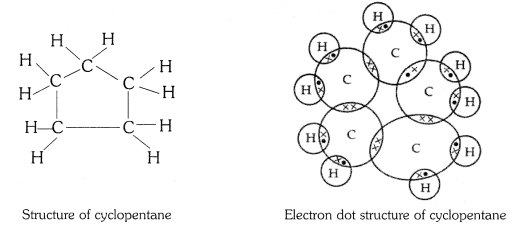
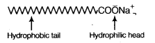
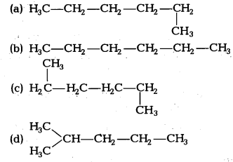

NCERT Solutions for Class 10 Science Chapter 4 Carbon And Its Compounds: In this article, we will provide you detailed Carbon and Its Compounds Class 10 NCERT Solutions. The NCERT Solutions For Class 10 Science Chapter 4 Carbon And Its Compounds was solved by the best teachers in India to help the students of class 10 to secure good marks in the subject science.
NCERT solutions for class 10 science give a strong foundation for every concept. Working on NCERT solutions will ensure a smooth and clear understanding of all the advanced concepts. According to CBSE marking scheme, NCERT Solutions For Class 10 Science Chapter 4 Carbon And Its Compounds will play a major role in competitive exams like JEE, NEET, etc., Read on to find out NCERT Solutions For Class 10 Science Chapter 4 Carbon And Its Compounds.
NCERT Solutions for Class 10 Science Chapter 4 Carbon and its Compounds
Before getting into the details of NCERT Solutions for Class 10 Science Chapter 4 Carbon And Its Compounds, let’s have an overview of a list of units and sub-units under NCERT Solutions for Class 10 Science Carbon And Its Compounds
- Carbon And Its Compounds
- Bonding In Carbon – The Covalent Bond
- Chemical Properties Of Carbon Compounds
- Some Important Carbon Compounds – Ethanol And Ethanoic Acid
- Soaps And Detergents
Free download NCERT Solutions for Class 10 Science Chapter 4 Carbon And Its Compounds PDF in Hindi Medium as well as in English Medium for CBSE, Uttarakhand, Bihar, MP Board, Gujarat Board, and UP Board students, who are using NCERT Books based on updated CBSE Syllabus for the session 2019-20.
- कार्बन और इसके यौगिक कक्षा 10 विज्ञान हिंदी में
- Class 10 Carbon and its Compounds Important Questions
- Carbon and its Compounds Class 10 Notes
- Carbon and its Compounds NCERT Exemplar Solutions
- Carbon and Its Compounds Class 10 Extra Questions
- Class 10 Carbon and its Compounds Mind Map
NCERT Solutions for Class 10 Science Chapter 4 Intext Questions
Page Number: 61
Question 1
What would be the electron dot structure of carbon dioxide which has the formula CO2 ?
Answer:
Question 2
What would be electron dot structure of sulphur which is made up of eight atoms of sulphur.
Answer:
Page Number: 68 – 69
Question 1
How many structural isomers can you draw for pentane ?
Answer:
Three, these are n-pentane, iso-pentane and neo-pentane.
Question 2
What are the two properties of carbon which lead to the huge number of carbon compounds we see around us ?
Answer:
(i) Tetravalency
(ii) Catenation.
Question 3
What will be the formula and electron dot structure of cyclopentane ?
Answer:
The molecular formula of cyclopentane is C5 H10 .
The electron dot structure of cyclopentane is given on the next page.

Question 4
Draw the structures for the following compounds :
(i) Ethanoic acid
(ii) Bromopentane
(iii) Butanone
(iv) Hexanal
Answer:
(i) Ethanoic acid (CH3COOH)
(ii) Bromopentane (C5H11Br)
(iii) Butanone (CH3 — CH2 — COCH3)
(iv) Hexanal (C5H11CHO)
Structural isomers for bromopentane: There are three structural isomers for bromopentane depending on the position of Br at carbon 1, 2, 3.
Positions 4 and 5 are same as 1, 2.
Question 5
How would you name the following compounds ?
Answer:
(i) Bromoethane
(ii) Methanal
(iii) 1 – Hexyne
Page Number: 71
Question 1
Why is the conversion of ethanol to ethanoic acid an oxidation reaction ?
Answer:
Conversion of ethanol into ethanoic acid is an oxidation reaction because addition of oxygen to a substance is called oxidation. Here, oxygen is added to ethanol by oxidising agent like alkaline potassium permanganate or acidified potassium dichromate and it is converted into acid.
Question 2
A mixture of oxygen and ethyne is burnt for welding. Can you tell why a mixture of ethyne and air is not used ?
Answer:
A mixture of ethyne and air is not used for welding because burning of ethyne in air produces a sooty flame due to incomplete combustion, which is not enough to melt metals for welding.
Page Number: 74
Question 1
How would you distinguish experimentally between an alcohol and a carboxylic acid ?
Answer:
Differences between alcohol and carboxylic acid
| Test | Alcohol | Carboxylic acid |
| (i) Litmus test | No change in colour. | Blue litmus solution turns red. |
| (ii) Sodium hydrogen carbonate test | C2H5OH + NaHCO3 → No reaction No brisk effervescence. | CH3COOH + NaHCO3 → CH3COONa + H2O + CO2 Brisk effervescence due to evolution of CO2. |
| (iii) Alkaline potassium permanganate | On heating, pink colour disappears. | Does not happen so. |
Question 2
What are oxidising agents ?
Answer:
Oxidising agents are the substances which give oxygen to another substances or which remove hydrogen from a substance.
For example, acidic K2Cr2O7 is an oxidising agent, that converts (oxidises) ethanol into ethanoic acid.
Page Number: 76
Question 1
Would you be able to check if water is hard by using a detergent ?
Answer:
No, because detergents can lather well even in hard water. They do not form insoluble calcium or magnesium salts (scum). On reacting with the calcium ions and magnesium ions present in the hard water.
Question 2
People use a variety of methods to wash clothes. Usually after adding the soap, they ‘beat’ the clothes on a stone, or beat it with a paddle, scrub with a brush or the mixture is agitated in a washing machine. Why is agitation necessary to get clean clothes ?
Answer:
It is necessary to agitate to get clean clothes because the soap micelles which entrap oily or greasy particles on the surface of dirty cloth have to be removed from its surface. When the cloth wetted in soap solution is agitated or beaten, the micelles containing oily or greasy dirt get removed from the surface of dirty cloth and go into water and the dirty cloth gets cleaned.
NCERT Solutions for Class 10 Science Chapter 4 Textbook Chapter End Questions
Question 1
Ethane, with the molecular formula C2H6 has
(a) 6 covalent bonds
(b) 7 covalent bonds
(c) 8 covalent bonds
(d) 9 covalent bonds
Answer:
(b) 7 covalent bonds.
Question 2
Butanone is a four-carbon compound with the functional group
(a) carboxylic acid
(b) aldehyde
(c) ketone
(d) alcohol
Answer:
(c) Ketone.
Question 3
While cooking, if the bottom of the vessel is getting blackened on the outside, it means that
(a) the food is not cooked completely.
(b) the fuel is not burning completely.
(c) the fuel is wet.
(d) the fuel is burning completely.
Answer:
(b) The fuel is not burning completely.
Question 4
Explain the nature of the covalent bond using the bond formation in CH3Cl.
Answer:
Covalent bond is formed by sharing of electrons so that the combining atoms complete their outermost shell.
In CH3Cl : C = 6, H = 1 and Cl = 17 And their electronic configuration is C – 2,4, H – 1 and Cl – 2, 8, 7
Three hydrogen atoms complete their shells by sharing three electrons (one electron each) of carbon atom.
Chlorine completes its outer shell by sharing its one out of seven electrons with one electron of carbon atom.
Thus carbon atom shares all its four electrons with three hydrogen atoms and one of chlorine atom and completes its outermost shell and single covalent bonds are formed in CH3Cl.
Question 5
Draw the electron dot structures for
(a) ethanoic acid
(b) propanone
(c) H2S
(d) F2.
Answer:
Question 6
What is a homologous series ? Explain with an example.
Answer:
Homologous series : A homologous series is a group of organic compounds having
similar structures and similar chemical properties in which the successive compounds differ by -CH2 group.
Characteristics of homologous series :
(i) All members of a homologous series can be represented by the same general formula. For example, the general formula of the homologous series of alkanes is CnH2n+2, in which ‘n’ denotes number of carbon and hydrogen atoms in one molecule of alkane.
(ii) Any two adjacent homologues differ by one carbon atom and two hydrogen atoms in their molecular formulae.
(iii) The difference in the molecular masses of any two adjacent homologues is 14u.
(iv) All the compounds of a homologous series show similar chemical properties.
(v) The members of a homologous series show a gradual change in their physical properties with increase in molecular mass.
For example, general formula of the homologous series of alkanes is CnH2n+2, in which ‘n’ denotes number of carbon atoms in one molecule of alkane. Following are the first five members of the homologous series of alkanes (general formula CnH2n+2).
| Value of n | Molecular formula | Name of compound |
| 1 | CH4 | Methane |
| 2 | C2H6 | Ethane |
| 3 | C3H8 | Propane |
| 4 | C4H10 | Butane |
| 5 | C5H12 | Pentane |
Question 7
How can ethanol and ethanoic acid he differentiated on the basis of their physical and chemical properties ?
Answer:
Difference on the basis of physical properties
| Property | Ethanol | Ethanoic acid |
| (i) State | Liquid | Liquid |
| (ii) Odour | Sweet smell | Pungent vinegar-like smell |
| (iii) Melting point | 156 K | 290 K |
| (iv) Boiling point | 351 K | 391 K |
Difference on the basis of chemical properties
| Test | Ethanol | Ethanoic acid |
| (i) Litmus test | No change in the colour of litmus solution. | Blue litmus solution turns red. |
| (ii) Sodium hydrogen carbonate test | C2H5OH + NaHCO3 → No reaction No brisk effervescence. | CH3COOH + NaHCO3 → CH3COONa + H2O + CO2 Brisk effervescence due to evolution of CO2. |
| (iii) Alkaline potassium permanganate | On heating, pink colour disappears. | Does not happen so. |
Question 8
Why does micelle formation take place when soap is added to water ? Will a micell be formed in other solvents such as ethanol also ?
Answer:
Micelle formation takes place when soap is added to water because the hydrocarbon chains of soap molecules are hydrophobic (water repelling) which are insoluble in water, but the ionic ends of soap molecules are hydrophilic (water attracting) and hence soluble in water.
Such micelle formation will not be possible in other solvents like ethanol in which sodium salt of fatty acids do not dissolve.
Question 9
Why are carbon and its compounds used as fuels for most applications ?
Answer:
Carbon and its compounds give a large amount of heat per unit weight and are therefore, used as fuels for most applications.
Question 10
Explain the formation of scum when hard water is treated with soap.
Answer:
Hard water contains salts of calcium and magnesium. Calcium and magnesium on reacting with soap form insoluble precipitate called scum. The scum formation lessens the cleansing property of soaps in hard water.
Question 11
What change will you observe if you test soap with litmus paper (red and blue)?
Answer:
Red litmus will turn blue because soap is alkaline in nature. Blue litmus remains blue in soap solution.
Question 12
What is hydrogenation ? What is its industrial application ?
Answer:
The addition of hydrogen to an unsaturated hydrocarbon to obtain a saturated hydro-carbon is called hydrogenation. The process of hydrogenation takes place in the presence of nickel (Ni) or palladium (Pd) metals as catalyst.
Application : The process of hydrogenation has an important industrial application. It is used to prepare vegetable ghee (or vanaspati ghee) from vegetable oils.
Question 13
Which of the following hydrocarbons undergo addition reactions :
C2H6, C3H8, C3H6, C2H2 and CH4
Answer:
Addition reactions take place only in unsaturated hydrocarbons. So addition reaction take place only in C3H6 and C2H2.
Question 14
Give a test that can be used to differentiate chemically between butter and cooking oil.
Answer:
Butter is a saturated carbon compound while cooking oil is an unsaturated carbon compound. An unsaturated compound decolourises bromine water, while a saturated compound cannot decolourise it. So we can distinguish chemically between a cooking oil and butter by the bromine water. Add bromine water to a little of cooking oil and butter taken in separate test-tubes.
- Cooking oil decolourises bromine water showing that it is an unsaturated compound.
- Butter does not decolourise bromine water showing that it is a saturated compound.
Question 15
Explain the mechanism of the cleaning action of soaps.
OR
Explain the cleansing action of soaps. [CBSE 2015 (Delhi)]
Answer:
When a dirty cloth is put in water containing dissolved soap, then the hydrocarbon end of the soap molecules in micelle attach to the oil or grease particles present on the surface of dirty cloth. In this way the soap micelle entraps the oily or greasy particles by using its hydrocarbon ends. The ionic ends of the soap molecules in the micelles, however, remain attached to water. When the dirty cloth is agitated in soap solution, the oily and greasy particles present on its surface and entrapped by soap micelles get dispersed in water due to which the soap water becomes dirty but the cloth gets cleaned. The cloth is cleaned thoroughly by rinsing in clean water a number of times.
| Board | CBSE |
| Textbook | NCERT |
| Class | Class 10 |
| Subject | Science |
| Chapter | Chapter 4 |
| Chapter Name | Carbon and its Compounds |
| Number of Questions Solved | 28 |
| Category | NCERT Solutions |
NCERT Solutions for Class 10 Science Chapter 4 Carbon and its Compounds
Carbon compounds: Covalent bonding in carbon compounds, Versatile nature of carbon, Homologous series, Nomenclature of carbon compounds containing functional groups, (halogens, alcohol, ketones, aldehydes, alkanes, and alkynes), difference between saturated hydrocarbons and unsaturated hydrocarbons. Chemical properties of carbon compounds (combustion, oxidation, addition and substitution reaction). Ethanol (only properties and uses), Ethanoic acid (only properties and uses), soaps and detergents.
Formulae Handbook for Class 10 Maths and Science
Question 1
What would be the electron dot structure of carbon dioxide which has the formula CO2?
Solution:
Question 2
What would be the electron dot structure of a molecule of sulphur, which is made up of eight atoms of sulphur? (Hint – The eight atoms of sulphur are joined together in the form of a ring.)
Solution:
More Resources
- NCERT Solutions
- NCERT Solutions for Class 10 Science
- NCERT Solutions for Class 10 Maths
- NCERT Solutions for Class 10 Social
- NCERT Solutions for Class 10 English
- NCERT Solutions for Class 10 Hindi
- NCERT Solutions for Class 10 Sanskrit
- NCERT Solutions for Class 10 Foundation of IT
- RD Sharma Class 10 Solutions
Question 3
How many structural isomers can you draw for pentane?
Solution:
We can draw 3 structural isomers for pentane.
Question 4
What are the two properties of carbon that lead to the huge number of carbon compounds we see around us?
Solution:
Due to its large valency, carbon atoms can form covalent bonds with a number of carbon atoms as well as with a large number of other atoms such as hydrogen, oxygen, nitrogen, sulphur, chlorine and many more atoms. This leads to the formation of a large number of organic compounds.
Download NCERT Solutions for Class 10 Science Chapter 4 Carbon and its Compounds PDF
Question 5
What will be the formula and electron dot structure of Cyclopentane?
Solution:
Question 6
Draw the structures for the following compounds.
i. Ethanoic acid
ii. Bromopentane
iii. Butanone
iv. Hexanal
Solution:

Question 7
How would you name the following compounds?
Solution:
i. Ethyl bromide
ii. Formaldehyde
iii. Hexyne
Question 8
Why is the conversion of ethanol to Ethanoic acid an oxidation reaction?
Solution:
The conversion of ethanol into ethanoic acid is called an oxidation reaction because oxygen is added to it during this conversion.
Question 9
A mixture of oxygen and ethyne is burnt for welding. Can you tell why a mixture of ethyne and air is not used?
Solution:
When a mixture of oxygen and ethyne is burnt, it burns completely producing a blue flame. This blue flame is extremely hot which produced a very high temperature which is used for welding metals. But the mixture of ethyne and air is not used for welding purposes because burning of ethyne in air produces a sooty flame, which is not enough to melt metals for welding.
Question 10
What are oxidizing agents?
Solution:
Oxidizing agents are the substances that gain electrons in an redox reaction and whose oxidation number is reduced.
Question 11
Explain the nature of the covalent bond using the bond formation of CH3Cl.
Solution:
CH3Cl(methyl chloride) is made up of one carbon atom, three hydrogen atoms and one chlorine atom. Carbon atom has 4 valence electrons, each hydrogen atom has one valence electron, and a chlorine atom has 7 valence electrons. Carbon atom shares its four valence electrons with three hydrogen atoms and 1 chlorine atom to form methyl chloride as follows:
From the above reaction, in the dot structure of methyl chloride (CH3Cl) there are four pairs of shared electrons between carbon and other atoms. Each pair of shared electrons constitutes one single covalent bond. So, methyl chloride has four single covalent bonds.
Question 12
Draw the electron dot structures for-
Solution:
Question 13
What is a homologous series? Explain with an example.
Solution:
Homologous series is a series of compounds with a similar general formula, possessing similar chemical properties due to the presence of the same functional group, and shows a gradation in physical properties as a result of increase in molecular size and mass. For example, methane has a lower boiling point than ethane since it has more intermolecular forces with neighbouring molecules. This is because of the increase in the number of atoms making up the molecule.
Question 14
How can ethanol and Ethanoic acid be differentiated on the basis of their physical and chemical properties?
Solution:
(i) Ethanol has a pleasant smell whereas ethanoic acid has the smell of vinegar.
(ii) Ethanol has a burning taste whereas ethanoic acid has a sour taste.
(iii) Ethanol has no action on litmus paper whereas ethanoic acid turns blue litmus paper red.
(iv) Ethanol has no reaction with sodium hydrogencarbonate but Ethanoic acid gives brisk effervescence with sodium hydrogencarbonate.
Question 15
Why does micelle formation take place when soap is added to water? Will a micelle be formed in other solvents such as ethanol also?
Solution:
Micelle formation takes place when soap is added to water. This is because when soap is added to water in which dirty clothes are soaked, the two parts of the soap molecule dissolves in two different mediums. The organic tail dissolves in the dirt, grime or grease and the ionic head dissolves in water. When the clothes are rinsed or agitated, the dirt gets pulled out of the clothes in the water by the soap molecule. In this way the soap does its cleaning work on dirty and grimy clothes or hands.
The soap molecules actually form a closed structure because of mutual repulsion of the positively charged heads. This structure is called a micelle.
Question 16
Why are carbon and its compounds used as fuels for most applications?
Solution:
Carbon and its compounds are used as fuels for most of the applications because they burn in air releasing a lot of heat energy.
Question 17
Explain the formation of scum when hard water is treated with soap.
Solution:
The precipitate form of scum is formed when soap is used for washing clothes. With hard water, a large amount of soap is wasted in reacting with the calcium and magnesium ions of hard water to form an insoluble precipitate. The precipitate form formed by the action of hard water on soap, sticks to the clothes being washed and interferes with the cleaning ability of the additional soap. This makes the cleaning of clothes difficult.
Question 18
What change will you observe if you test soap with litmus paper (red and blue)?
Solution:
Soap is the salt of a strong base (NaOH) and a weak acid (carboxylic acid), so a solution of soap in water is basic in nature. Being basic, a soap solution turns red litmus paper blue.
Question 19
What is hydrogenation? What is its industrial application?
Solution:
It is a class of chemical reactions in which the net result is addition of hydrogen (H2) to unsaturated organic compounds such as alkenes, alkynes, etc. Hydrogenation is widely applied to the processing of vegetable oils and fats. Complete hydrogenation converts unsaturated fatty acids to saturated ones.
Question 20
C2H5, C3H8, C3H6, C2H2 and CH4
Solution:
Alkenes and alkynes (unsaturated hydrocarbons) undergo addition reactions. From the above hydrocarbons C2H2 is an alkyne, whereas C3H6 is an alkene. So, C3H6 and C2H2 will undergo addition reactions.
Question 21
Give a test that can be used to differentiate chemically between butter and cooking oil.
Solution:
Bromine water test can be used to differentiate chemically between butter and cooking oil. Add bromine water to a little of cooking oil and butter taken in separate test tubes. <font
a. Decolourising of bromine water by cooking oil (unsaturated compound)
b. Butter (saturated compound) does not decolourise bromine water
Question 22
Explain the mechanism of the cleaning action of soaps.
Solution:
We all know that soap is used to remove dirt and and grime from substances. Generally dirt and grime get stuck because they have an oily component, which is difficult to remove, by plain brushing or washing by water. A soap molecule has two parts, a head and a tail i.e. the long chain organic part and the functional group –COO– Na+.
A soap molecule has a tadpole like structure shown below.
The organic part is water insoluble but is soluble in organic solvents or in oil or grease. The ionic part is soluble in water, as water is a polar solvent. When soap is added to water in which dirty clothes are soaked, the two parts of the soap molecule dissolve in two different mediums. The organic tail dissolves in the dirt, grime or grease and the ionic head dissolves in water. When the clothes are rinsed or agitated, the dirt gets pulled out of the clothes, by the soap molecule. In this way soap does its cleaning work on dirty and grimy clothes or hands.
The soap molecules actually form a closed structure because of mutual repulsion of the positively charged heads. This structure is called a micelle. The micelle pulls out the dirt and grime more efficiently.
Question 23
Would you be able to check if water is hard by using a detergent?
Solution:
We would not be able to check whether a sample of water is hard by using a detergent, this is because a detergent forms lather easily even with hard water.
Question 24
People use a variety of methods to wash clothes. Usually after adding the soap, they ‘beat’ the clothes on a stone, or beat ii with a paddle, scrub with a brush or the mixture is agitated in a washing machine. Why is agitation necessary to get clean clothes?
Solution:
It is necessary to shake to get clean clothes because the soap micelles, which entrap oily or greasy particles on the surface of dirty clothes, have to be removed from their surface. When the clothes which are wet by soap solution are beaten, the micelles containing oil or greasy dirt particles get removed from the surface of dirty clothes and go into water and the dirty cloth gets cleaned.
Multiple Choice Questions (MCQs) [1 Mark each]
Question 1.
Buckminster fullerene is an allotropic form of [NCERT Exemplar]
(a) phosphorus
(b) sulphur
(c) carbon
(d) tin
Answer:
(c) Buckminster fullerene is an allotrope of carbon containing clusters of 60 carbon atoms joined together to form spherical molecules. Its formula isC60 (C-sixty). It is a dark solid at room temperature and as compared to another allotropic form of carbon (diamond and graphite), it is neither very hard nor soft.
Question 2.
The hetero atoms present in
CH3 – CH2 – O – CH2 – CH2Cl are [NCERT Exemplar]
(i) oxygen
(ii) carbon
(iii) hydrogen
(iv) chlorine
(a) (i) and (ii)
(b) (ii) and (iii)
(c) (iii) and (iv)
(d) (i) and (iv)
Answer:
(d) Atoms other than C and H, if present in organic compound, are called heteroatoms.
Question 3.
In which of the following .compounds -OH is the functional group? [NCERT Exemplar]
(a) Butanone
(b) Butanol
(c) Butanoic
(d) Butanal
Answer:
(b) Butanol, CH3—CH2—CH2—CH2—OH
The general formula of alcohols is CnH2n+1— OH.
For butanol, n = 4. So, formula is
C4H9—OH or CH3—CH2—CH2—CH2—OH
Question 4.
The soap molecule has a [NCERT Exemplar]
(a) hydrophilic head and a hydrophobic tail
(b) hydrophobic head and a hydrophilic tail
(c) hydrophobic head and a hydrophobic tail
(d) hydrophilic head and a hydrophilic tail
Answer:
(a) A soap molecule is made up of two parts- a long hydrocarbon part and a short ionic part —COONa+ group. The long hydrocarbon chain is hydrophobic (water repelling) and ionic portion is hydrophilic (water attracting).

Question 5.
Structural formula of benzene is [NCERT Exemplar]
Answer:
(c) Benzene molecule contains alternate single and . double bonds. Its formula is C6H6. In structure (b) formula is C6H12. In structure (a) double bond is not at alternate position. In (d) formula is C6H8.
Question 6.
Which of the following is not a straight chain hydrocarbon? [NCERT Exemplar]

Answer:
chain hydrocarbon not straight chain hydrocarbon. Rest three are straight chain hydrocarbons.
Question 7.
Which among the following are unsaturated hydrocarbons? [NCERT Exemplar]

(a) (i) and (iii)
(b) (ii) and (iii)
(c) (ii) and (iv)
(d) (iii) and (iv)
Answer:
(c) Unsaturated hydrocarbons have double or triple bond in the structure. Both (ii) and (iv) structures have triple and double carbon-carbon bonds respectively.
Question 8.
Chlorine reacts with saturated hydrocarbons at room temperature in the [NCERT Exemplar]
(a) absence of sunlight
(b) presence of sunlight
(c) presence of water
(d) presence of hydrochloric acid
Answer:
(b) Chlorine reacts with saturated hydrocarbon at room temperature in the presence of sunlight.
Question 9.
In the above given reaction, alk.KMnO4 acts as [NCERT Exemplar]
(a) reducing agent
(b) oxidising agent
(c) catalyst agent
(d) dehydrating
Answer:
(b) KMnO4 acts as oxidising agent, because it removes hydrogen from CH3CH2OH and adds one oxygen to it.
Question 10.
Butanone is a four carbon compound with functional group [NCERT Exemplar]
(a) carboxylic acid
(b) aldehyde
(c) ketone
(d) alcohol
Answer:
(c) In butanone, the functional group is
Question 11.
Identify the unsaturated compounds from the following [NCERT Exemplar]
(i) Propane
(ii) Propene
(iii) Propyne
(iv) Chloropropane
(a) (i) and (ii)
(b) (ii) and (iv)
(c) (iii) and (iv)
(d) (ii) and (iii)
Answer:
(d) Propene, CH3CH=CH2 (ii) and propyne, CH3— C = CH (iii) both have double and triple bonds, respectively, hence are unsaturated compounds.
Question 12.
Which of the following does not belong to the same homologous series? [NCERT Exemplar]
(a) CH4
(b) C2H6
(c) C3H8
(d) C4H8
Answer:
(d) Because succesive members of a homologous series differ by —CH2 unit.
Thus, C4H10 is the next member of this series. So, homologous series of alkanes is:
methane (CH4), ethane (C2H6), propane (C3H8) and butane (C4H10).
So, C4H8 does not belong to the homologous series.
Question 13.
Ethane with molecular formula C2H6 has [NCERT Exemplar]
(a) 6 covalent bonds
(b) 7 covalent bonds
(c) 8 covalent bonds
(d) 9 covalent bonds
Answer:
(b) Structure formula of ethane (C2H6) is

It is clear that it has 7 covalent bonds.
Question 14.
Which of the following are correct structural isomers of butane? [NCERT Exemplar]

(a) (i) and (iii)
(b) (ii) and (iv)
(c) (i) and (ii)
(d) (iii) and (iv)
Answer:
(a) Structure (i) is n-butane and structure (iii) is iso-butane. Since, molecular formula is same, only structures are different. So, (i) and (iii) are isomers while structures (ii) and (iv) have molecular formulaC4H8.
Question 15.
In the soap micelles, [NCERT Exemplar]
(a) the ionic end of soap is on the surface of the cluster while the carbon chain is in the interior of the cluster
(b) ionic end of soap is in the interior of the cluster and the carbon chain is out of the cluster
(c) Both ionic end and carbon chain are in the interior of the cluster
(d) Both ionic end and carbon chain are on the exterior of the cluster
Answer:
(a) A ‘spherical aggregate of soap molecules’ in the soap solution in water is called a ‘micelle’. In a soap micelle, the soap molecules are arranged readily with hydrocarbon ends directed towards the centre and ionic ends directed outwards.
Question 16.
Vinegar is a solution of [NCERT Exemplar]
(a) 50% – 60% acetic acid in alcohol
(b) 5% – 8% acetic acid in alcohol
(c) 5% – 8% acetic acid in water
(d) 50% – 60% acetic acid in water
Answer:
(c) A 5%-8% solution of acetic acid in water is called vinegar.
Question 17.
Oils on treating with hydrogen in the presence of palladium or nickel catalyst form fats. This is an example of [NCERT Exemplar]
(a) addition reaction
(b) substitution reaction
(c) displacement reaction
(d) oxidation reaction
Answer:
(a) Oils are unsaturated compounds containing double bonds. Addition reactions are characteristic property of unsaturated hydrocarbons. The given reaction is an example of addition reaction.
Question 18.
Carbon forms four covalent bonds by sharing its four valence electrons with four univalent atoms, e.g. hydrogen. After the formation of four bonds, carbon attains the electronic configuration of [NCERT Exemplar]
(a) helium
(b) neon
(c) argon
(d) krypton
Answer:
(b) Electronic configuration of carbon (C) = 2, 4 when it forms four covalent bonds by sharing its four valence electrons with hydrogen, it forms CH4 molecule like this
Now, electronic configuration of C in CH
4 = 2, 8.
Atomic number of Ne is 10. Its electronic K L configuration is 2,8. Therefore, after the formation of four bonds, carbon attains the electronic configuration of neon.
Question 19.
Mineral acids are stronger acids than carboxylic acids because
(i) mineral acids are completely ionised.
(ii) carboxylic acids are completely ionised.
(iii) mineral acids are partially ionised.
(iv) carboxylic acids are partially ionised.
(a) (i) and (iv)
(b) (ii) and (iii)
(c) (i) and (ii)
(d) (iii) and (iv)
Answer:
(a) Mineral acids are strong acids which ionise almost completely and carboxylic acids are weak acids which ionise only pardally.
Question 20.
While cooking, if the bottom of the vessel is getting blackened on the outside, it means that [NCERT Exemplar]
(a) food is not cooked completely
(b) the fuel is not burning completely
(c) fuel is wet
(d) fuel is burning completely
Answer:
(b) The unburnt particles of the fuel present in smoke blacken the vessel from outside.
Question 21.
The reaction in which a reagent (partially or completely) replaces atom or group of atoms from saturated compounds or A are called B reaction.
Here, A and B respectively refers to
(a) unsaturated compounds, addition
(b) unsaturated compounds, substitution
(c) benzene, substitution
(d) alkene, addition
Answer:
(c) Substitution reaction is usually given by saturated compounds and benzene. Unsaturated compounds usually give addition reactions.
Question 22.
The table gives information about some esters and the fragrance they produce.
| Ester | Fragrance |
| Ethyl methanoate | Rum |
| Methyl butanoate | Apple |
| Ethyl butanoate | Pineapple |
| Propyl ethanoate | Pear |
Which structure do the ester compounds in the table have in common?
Answer:
(d) All esters have the common structure of carboxylic group represented by the suffix date.
NCERT Solutions for Class 10 Science Chapter 4 Carbon and Its Compounds (Hindi Medium)
Class 10 Science Carbon and its Compounds Mind Map
Carbon is an important constituent of the foods, fuels, household and commercial articles, textile fabrics, perfumes, explosives, dyes, war gases etc. The Earth’s crust has only 0.02% carbon in the form of minerals (like petroleum, coal, carbonates and hydrogen carbonates) and the atmosphere comprises of only 0.03% of carbon dioxide
Allotropes of Carbon
An element, in different forms, having different physical properties but similar chemical properties is known as allotropes of that element.
Carbon has three well known allotropes which are graphite, diamond and buck minster fullerene.
Graphite:
- In graphite, each carbon atom is bonded to three other carbon atoms in the same plane giving a hexagonal array.
- One of these bonds is a double-bond, and thus the valency of carbon is satisfied.
- Graphite structure is formed by the hexagonal arrays being placed in layers one above the other.
- Unlike other non-metals graphite is a very good conductor of electricity.
Diamond:
- In diamond, each carbon atom is bonded to four other carbon atoms forming a rigid three-dimensional structure.
- Diamond is the hardest substance known while graphite is smooth and slippery.
- Diamonds can be synthesized by subjecting pure carbon to very high pressure and temperature.
- These synthetic diamonds are small but are otherwise indistinguishable from natural diamonds.
Fullerene:
This is another class of carbon allotropes. The first one to be identified was C-60 which has carbon atoms arranged in the shape of a football. Since this looked like the geodesic dome designed by the US architect Buckminster Fuller, the molecule was named fullerene.
Saturated and Unsaturated Hydrocarbons
Saturated hydrocarbons: Compounds in which carbon- carbon atoms & carbon-hydrogen atoms are held together by single bonds. General formula is CnH2n+2.
Unsaturated hydrocarbons: Compounds consist of a single, double or triple bond between carbon-carbon atoms.
These double-bonded compounds are called alkenes & the triple-bonded compounds are called alkynes.
The general formula for alkenes is CnH2n & for alkynes the same is CnH2n-2.
Cycloalkanes: These hydrocarbons possess one or multiple carbon rings. The hydrogen atom is attached to the carbon ring.
Aromatic hydrocarbons: These are also called as arenes. Arenes are compounds which consist of at least one aromatic ring.
Bonding in Carbon
- Atomic number of carbon = 6
- Electronic configuration has 2 electrons in KL shell and 4 electrons in L shell.
- Carbon shares its four valence electrons with other atoms of carbon or with atoms of other elements. These electrons contributed by the atoms, for mutual sharing in order to acquire the stable noble gas configuration is called covalencv of that atom.
- Hence, carbon shows tetracovalency.
- The simplest molecule formed by sharing of electrons (i.e., covalent bonds), can be represented by electron dot structure.
Versatile Nature of Carbon
- Catenation: It is the unique property of self linkage of carbon atoms by means of covalent bonds to form straight chains, or branched chains, or the rings of different sizes.
- Tetracovalency: Due to small size, and presence of four valence electrons, carbon can fonn strong bonds with other carbon atoms, hydrogen, oxygen, nitrogen, or sulphur, etc. For example, compounds of carbon with hydrogen are called hydrocarbons.
- Multiple Bond Formation: Due to small size, it forms multiple bonds (i.e., double bonds or triple bonds) with other elements as well as with its own atoms.
- Isomerism: The phenomenon by means of which the carbon compounds with same molecular formula show different structures, and properties.
Soaps: Ester of higher fatty acids is called soap. It is manufactured by the reaction of caster of higher fatty acid with sodium hydroxide. The sodium salt so formed has cleansing property.
Detergents: Soap cannot form lather in hard water. To overcome this problem, detergents were introduced. Detergent is also known as soapless soap. Detergent is sodium salt of benzene sulphonic acid or sodium salt of long chain alkyl hydrogen sulphate.
Nomenclature of Carbon Compounds: IUPAC Name
Rales for Nomenclature of Organic Compounds:
- Identify the number of carbon atoms in the compound & name the compound according to the number of carbon atoms.
- If any functional group is present, add a ‘prefix’ or ‘suffix’ specified for the functional group with the name of the parent compound.
- Prefix is added for only Halo group and for rest of the functional groups suffix is added.
- If the name of the functional group is to be given as a suffix, the name of the carbon chain is modified by deleting the final ‘e’ and adding the appropriate suffix.
- In the case of unsaturated hydrocarbon if double bond is present in the carbon chain, then ‘ene’ will be added in the parent name of compound after omitting ‘ane’ and if triple bond is present in the carbon chain, then ‘yne’ will be added.
Properties of Ethanol
-
-
- Ethanol exists in liquid state at room temperature.
- Mixture of alcohol to ethane results in the fonnation of ethanol & it is the active ingredient of all alcoholic drinks. Even a small quantity of ethanol if consumed can causes drunkenness.
- Being a good solvent, it is also used in medicines like tincture of iodine, cough syrups, and many other tonics.
- Reaction with sodium –
-
Properties of Ethanoic Acid
-
-
- Ethanoic acid commonly known as acetic acid belongs to a group of carboxylic acids.
- Vinegar used in our day to day life is a 5-8% solution of acetic acid in water. It is extensively used as a preservative in pickles.
- Pure ethanoic acid has a melting point of290 K due to which it
often freezes in cold climates giving rise to its name as glacial acetic acid.
-
- Reaction with a base: NaOH + CH3COOH → CH3COONa + H2O
- Reaction with carbonates and hydrogen carbonates:
2CH3COOH + NA2CO3 → 2CH3COONa + H2O + CO2
CH3COOH + NaHCO3 → CH3COONa + H2O + CO2
Homologous Series
- A series of carbon compounds in which same functional group substitutes the hydrogen atom is called a homologous series.
- These compounds have similar chemical properties due to the presence of same kind of functional group. For e.g. series of alkanes i.e. methane, ethane, propane, butane and so on is a homologous series.
- Similarly the series of alkene & alkynes also forms homologous series.
- The series like methanol, ethanol, propanol, butanol and so on is also a homologous series. The functional group attached to these compounds is alcohol.
- With the increase in molecular mass in a homologous series the physical properties like melting points, boiling points & solubility in a particular solvent increases.
- But the chemical properties of a homologous series determined by the functional group remain same.
Chemical Properties of Carbon Compounds
Combustion Reactions: When Carbon & its compounds bum in the presence of Oxygen (or air), they give CO2, heat & light.
E.g.: C + O2 → CO2 + Heat + Light.
Oxidation Reactions: Though combustion is generally an oxidation reaction, not all oxidation reactions are combustion reactions. Oxidation is also carried out by using oxidizing agents (Oxidants).
Addition reactions: Unsaturated organic compounds, like alkenes and alkynes, undergo addition reactions to become saturated in nature.
E.g. CH2 = CH2 + H2 + (Nickel catalyst) → CH3– CH3
Substitution Reaction: A Substitution reaction is one in which an atom or a group of atoms (functional group) in the compound are replaced by another atom ( or group of atoms). Substitution reactions are single displacement reactions.
E.g.: CH4 + Cl2 + Sunlight → CH3Cl + HCl
Now that you are provided all the necessary information regarding NCERT Solutions for class 10 Science chapter 4. We hope this detailed article on NCERT Solutions for Class 10 Science Carbon and its compounds is helpful. If you have any query regarding this article or NCERT Solutions for Class 10 Science, leave your comments in the comment section below and we will get back to you as soon possible.
NCERT Solutions for Class 10 Science All Chapters
- Chapter 1 Chemical Reactions and Equations
- Chapter 2 Acids, Bases and Salts
- Chapter 3 Metals and Non-metals
- Chapter 4 Carbon and Its Compounds
- Chapter 5 Periodic Classification of Elements
- Chapter 6 Life Processes
- Chapter 7 Control and Coordination
- Chapter 8 How do Organisms Reproduce?
- Chapter 9 Heredity and Evolution
- Chapter 10 Light Reflection and Refraction
- Chapter 11 Human Eye and Colourful World
- Chapter 12 Electricity
- Chapter 13 Magnetic Effects of Electric Current
- Chapter 14 Sources of Energy
- Chapter 15 Our Environment
- Chapter 16 Management of Natural Resources